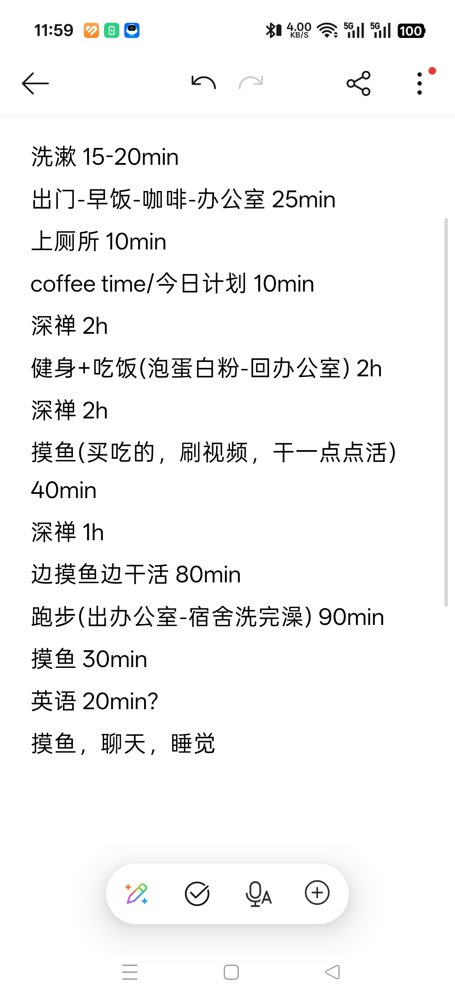

计划：
今天进行压力测试，记录常规一天中各个任务耗时，为以后制定框架打基础
健身计划：上肢/核心组间1min，1h可以总共安排25-30个动作
推胸类5组 引体向上5组 二头5组 核心动作+自由训练10-15组
反馈：这个健身计划不是很科学，20组之后就力竭了，考虑加大组间休息或者准备点后备隐藏能源边练边吃
压力测试的结果是，我在办公室的大部分时间能控制住自己完成科研学习任务，但是一会宿舍，就根本没办法静下心来干活了。我应该调整一下计划，将股票研究，学习无关的有趣新知识，安排在宿舍干。
